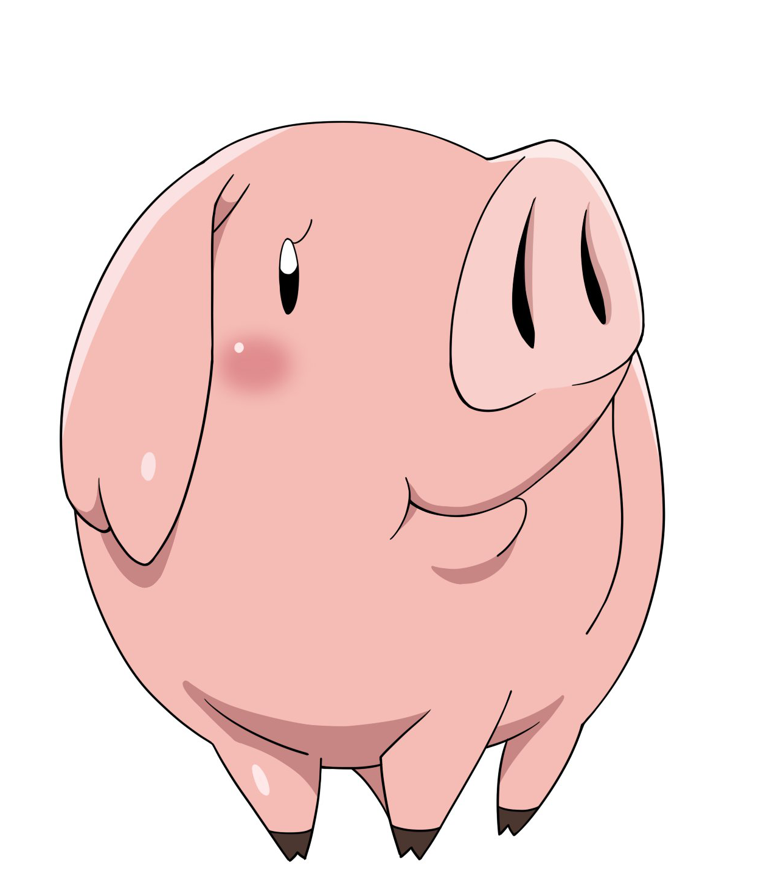

|  | Hawk(ホーク, Hōku ?) es un cerdo parlante y compañero de Meliodas. Es el limpiador de sobras oficial del Boar Hat. Apariencia Hawk es un cerdo rosado relativamente grande que llevaba un aro con palabra "Star Boar", en la oreja izquierda, en su oreja izquierda lleva una creacion de Merlin que le permite medir el poder de todo. Su cuerpo es bien redondeado y sus patas son muy cortas. Tiene una marca en el lomo en forma de trébol de cuatro hojas. Al igual que su madre, sus orejas tienen forma de M. Gracias a su habilidad Transpork, al devorar parte del estómago de un Tyrant Dragon, Hawk obtuvo rasgos escamosos en sus patas, orejas, lomo y cola la cual obtiene unos picos, además de un par de cuernos. Posteriormente al devorar a un Reptador de Arena, sufre un nuevo cambio, obtiene manchas oscuras en su lomo, sus patas delanteras se vuelven aletas y las traseras una cola. Personalidad Su personalidad es un tanto opuesta a la de su compañero Meliodas, ya que muestra un mayor sentido de la responsabilidad y se molesta con las constantes acciones pervertidas que tiene Meliodas hacia Elizabeth. Es bastante asustadizo y normalmente suele huir junto con Elizabeth cuando las cosas no van muy bien, pero aún así puede ser muy valiente a la hora de proteger a sus amigos. Normalmente, discute con sus compañeros porque siempre tienen intensión de comérselo, sobre todo Ban y Meliodas. Su característica principal es su amor por las sobras de comida, aunque no le agrada mucho la carne. El es capaz de hacer lo que sea por unas cuantas sobras de comida, aunque estas sean de la asquerosa comida del Boar Hat lo cual es considera una delicia. También se lo puede caracterizar como un "niño de mami" ya que frecuentemente pide la ayuda de su madre cuando se encuentra en algún peligro. |
|---|---|